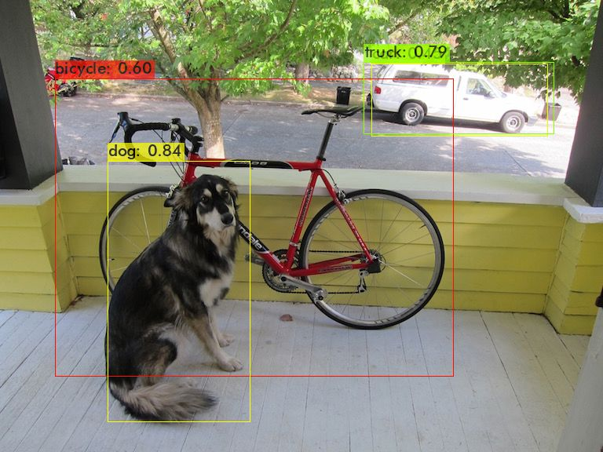

Trialling Skill-Assisted Agentic Porting.
Darknet, CUDA to HIP, on a Ryzen AI Max+ 395.
Context
ROCm is AMD's open-source GPU compute stack. HIP is its CUDA-like programming interface: the API mirrors CUDA closely, and the same HIP source can be compiled either for AMD GPUs through ROCm or for NVIDIA GPUs through a CUDA backend. AMD's pitch is that porting CUDA code to HIP loses you nothing, since it still runs on NVIDIA. HIPify, the tool that mechanically translates CUDA source to HIP, has been around for years.
More recently, AMD released a CUDA-to-HIP porting skill for coding agents. I was curious what would happen if I took one of the canonical pieces of CUDA work out there, put an agent in a folder with it and the skill, and told it to port it.
I used AlexeyAB's Darknet (CUDA version, upstream commit 59596d7): it has real kernels, small YOLO models, and a CPU mode to check against. Target: the Radeon 8060S (gfx1151) in a Ryzen AI Max+ 395.
People have had Darknet running on AMD for a while - AlexeyAB's README links an older HIP fork, and the maintained Darknet lineage documents AMD builds - so I was mostly interested in what the skill would do with it from a clean start.
Port
I gave the agent the skill and the Darknet source and it ported the lot in a single pass of 10 minutes 54 seconds, on one computer, after which I moved over to my home machine to build and test it - which doesn't have ROCm installed, so I wasn't expecting it to build first time, and it did need about two lines changed before it would. Had I started on a machine with the build tools already in place, catching those would have been part of the agent's own loop, and would likely have cost a couple of minutes more rather than a separate fix-up step. You can find the result at DFAvnet/darknet-rocm.
The build script, scripts/build_amd.sh, copies the source to a staging directory, runs HIPify on the copy and compiles it with hipcc, swapping cuBLAS and cuRAND for hipBLAS and hipRAND along the way and leaving the CUDA sources in the repository untouched.
Alongside that, the published fork has a handful of small integration fixes, none of them in the kernels:
- a leftover
#pragma comment(lib, "cuda.lib"), removed; - Windows-only OpenCV link pragmas, guarded with
_MSC_VER; - CRLF line endings in the build script;
- a helper function name collision, fixed by making it
static; - a CPU transpose routine only compiled in CPU builds, enabled for the HIP build. It still runs on the CPU.
With no ROCm on the home machine, the build and runs use a rootless Podman container with ROCm and OpenCV 4.6, passing through /dev/kfd and /dev/dri. Not enabled: cuDNN/MIOpen, half precision, CUDA graphs, CUDA-OpenGL interop.
Correctness
Reference: the original upstream Darknet built for CPU. Same weights, configs and preprocessing; confidence threshold 0.25; NMS 0.45. Inputs: six Darknet sample images, three frames from OpenCV's vtest.avi, and one repeated image. Ten checks per model.
Pass criteria per image: identical detection counts per class; every matched box IoU ≥ 0.99; every confidence within 0.001.
- YOLOv3-tiny: 10/10. Min IoU 0.99991; max confidence difference 0.000007.
- YOLOv4-tiny: 10/10. Min IoU 0.99993; max confidence difference 0.000008.
- YOLOv4: 2/10. Class counts match on all images. Min IoU 0.892; max confidence difference 0.055.
I haven't worked out why YOLOv4 drifts yet. One suspect is the Mish activation, which upstream implements differently on the CPU and GPU, but I haven't confirmed that's it.
Bear in mind this only compares final detections on ten images, so it says the port agrees with the CPU build, not how accurate either of them is, and it doesn't touch training.
Throughput
vtest.avi, 768×576, 795 frames. Three runs per model. Wall time includes container start, model load, detection, drawing, and writing video and JSON. Medians:
- YOLOv3-tiny, 416×416: 106 FPS
- YOLOv4-tiny, 416×416: 91 FPS
- YOLOv4, 608×608: 9.4 FPS

dog.jpg, HIP build.Result
Both tiny models ported and agreed with the CPU build on all ten checks, and full YOLOv4 runs and finds the same objects as the CPU build, although its box positions and confidences drift outside the tolerance I set.
Given the hardware, I expected more than 9.4 FPS from full YOLOv4. I think this comes down to the level of abstraction the port works at. If you were writing this for the GPU from scratch, you would reach straight for pre-optimised library kernels for the heavy layers. A skill-assisted port translates at a finer grain instead - here's what this CUDA kernel does, here's the equivalent HIP kernel - which keeps the code faithful to the original but never swaps in the pre-optimised kernels that would break through the hardware-level bottlenecks. Consistent with that, this build has cuDNN, and therefore its MIOpen equivalent, switched off, so every convolution goes through Darknet's generic im2col-plus-GEMM path rather than tuned convolution kernels.
HIP is portable by design, so I don't think the translation itself is the problem so much as the route the port took, which makes this possibly an area the skill could improve on - reaching for the optimised libraries where they exist rather than translating kernel by kernel. Or it could just be my run; agents are non-deterministic, and a second attempt might well have gone a different way. Maybe I should have used Opus 5.5.
Next: an optimisation pass on the port, finding the YOLOv4 discrepancy, and running it on a live feed from my KV260 webcam.
□